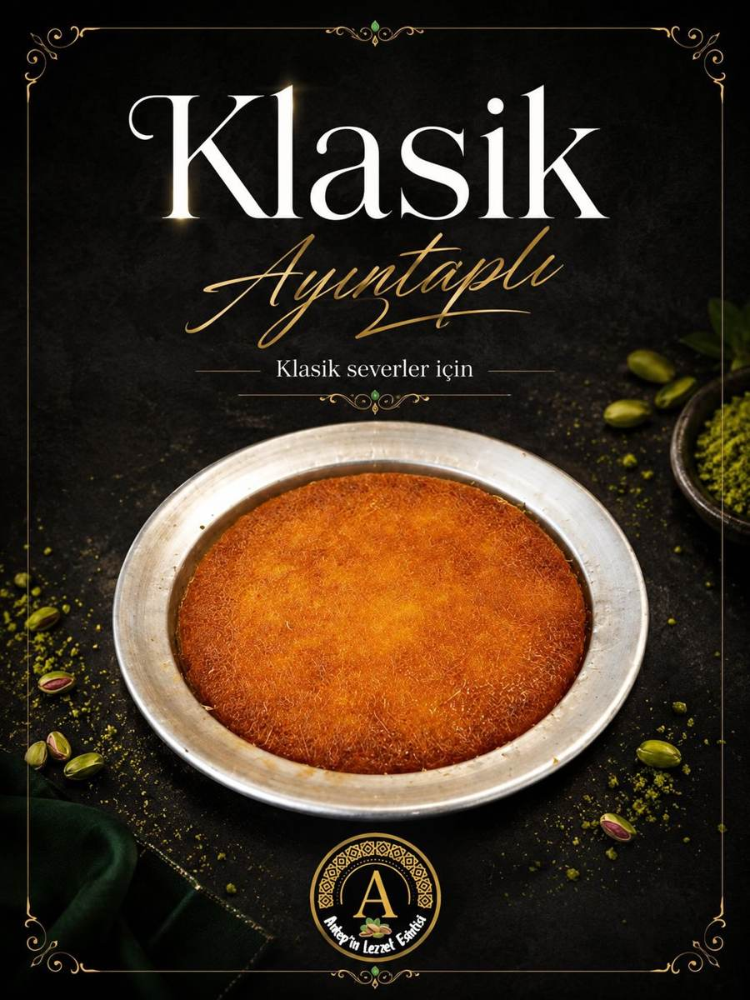
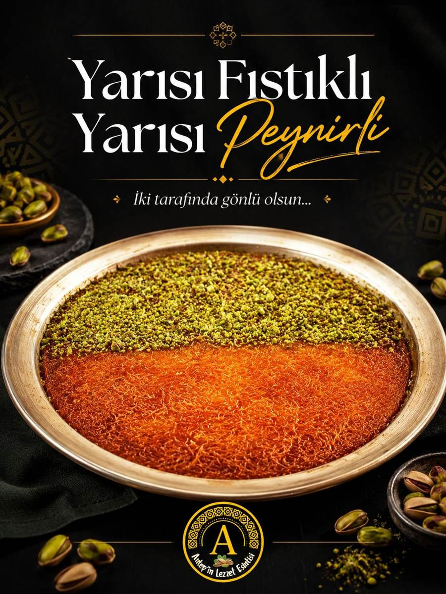
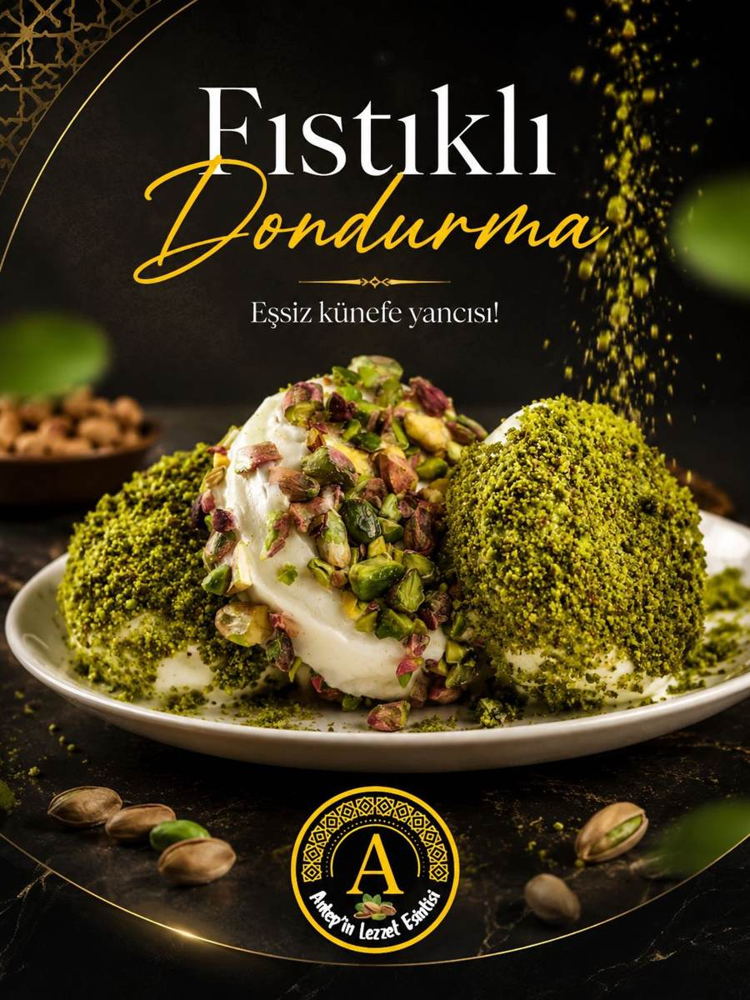
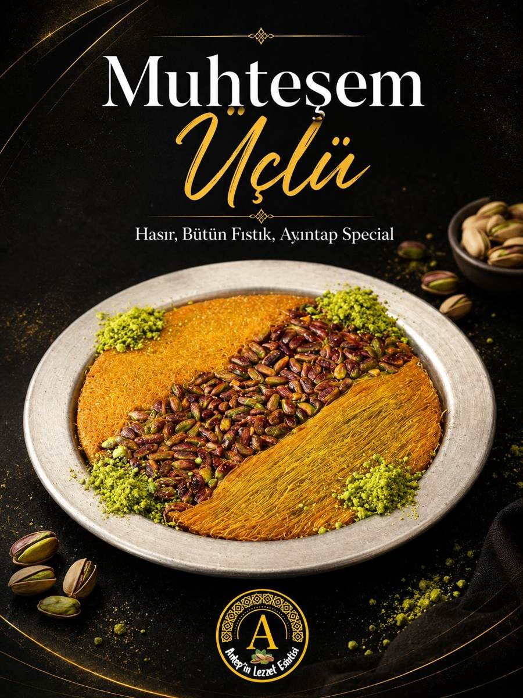
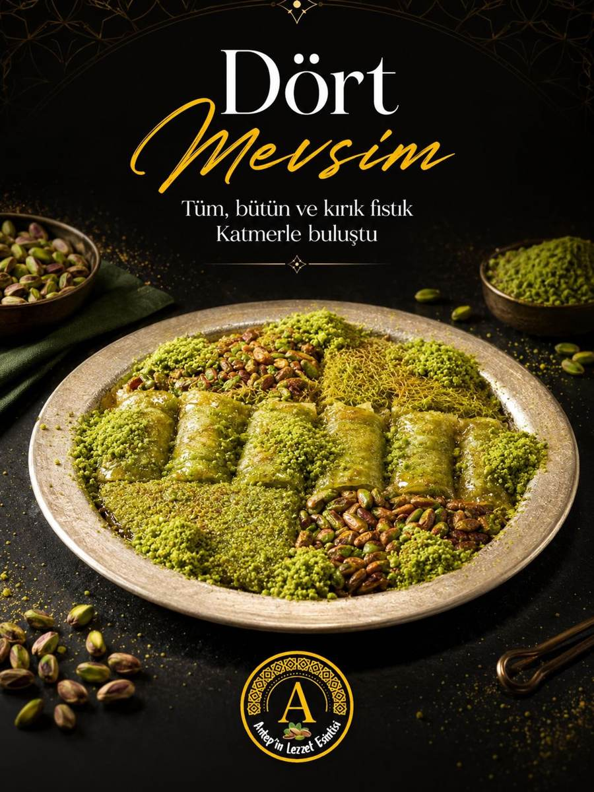

30'dan fazla künefe çeşidi, katmer, baklava ve dondurma — hepsi günlük hazırlanır. Küçük (1 kişilik), Orta ve Büyük (4-5 kişilik) boy seçenekleriyle.





WhatsApp'tan yaz, sıcak sahan senin adresine gelsin.
Konum & İletişim